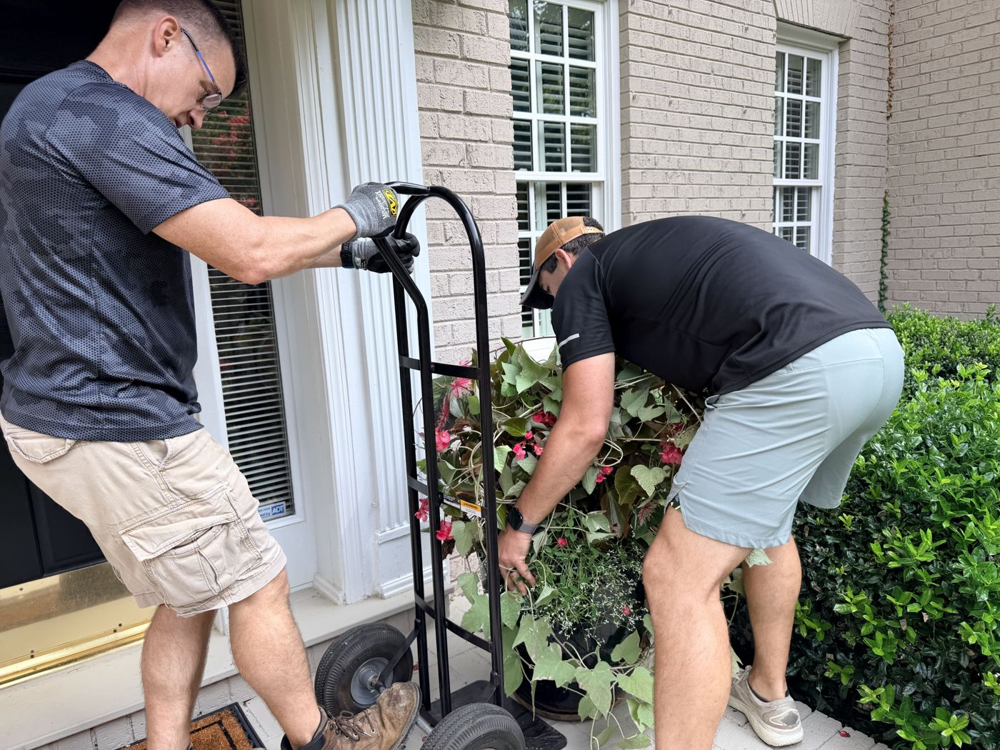
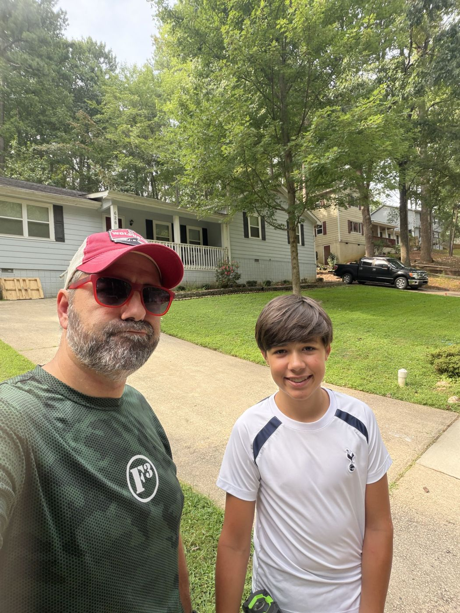
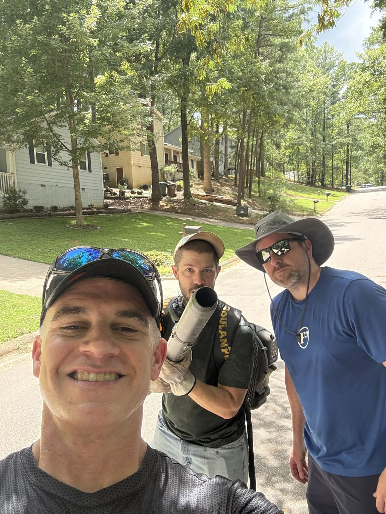
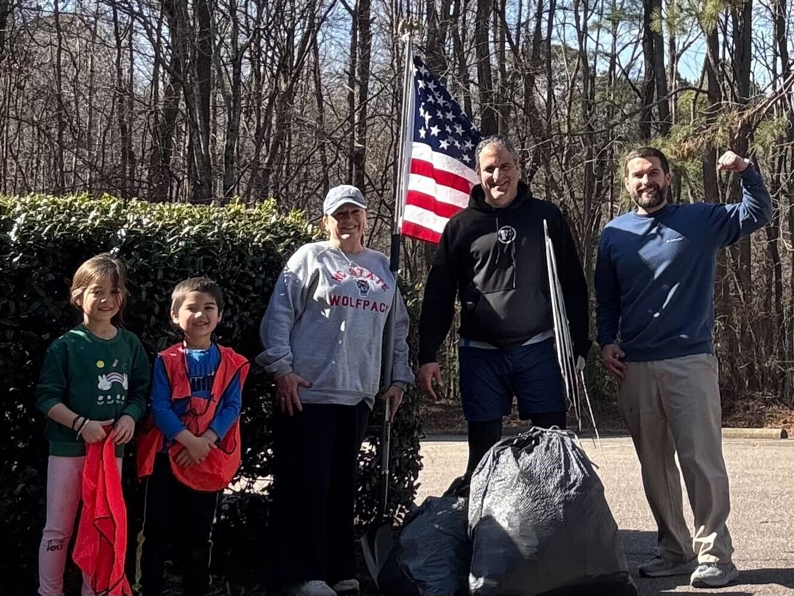
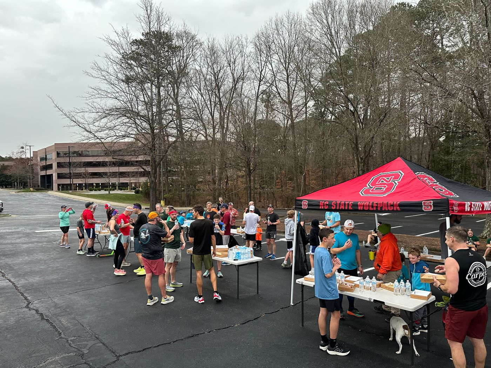
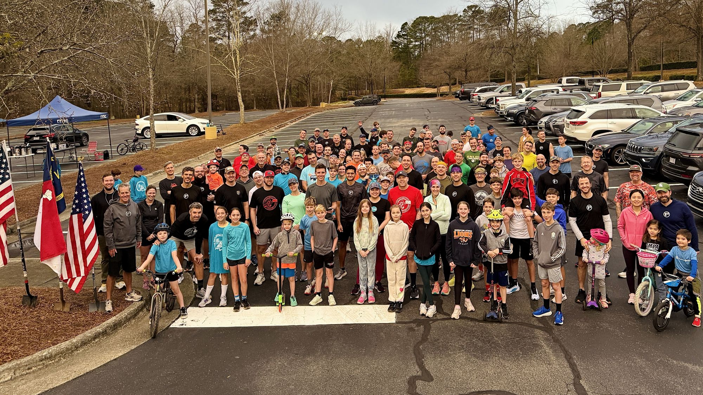

Community service
Faith, for us, includes showing up for Cary with rakes, miles, and money raised.
As men of Faith, we believe we are part of something greater than ourselves. One of the primary ways we demonstrate leadership in the community is through service.
The Carying Place
The Carying Place teaches homeless, working families with children the life skills for independent living, with short-term housing and support.
When they need volunteer labor, they call us. We help with moving furniture, home repairs, and ongoing lawn care.
TCP Sawgrass
F3 South Cary, along with F3 Carpex, provides free, ongoing lawn care and maintenance for Carying Place homes in Cary. Afterward the volunteers often gather for fellowship.
To join in, check Slack #tcp-sawgrass or ask us.
Healing Transitions
Healing Transitions provides long-term recovery programs, non-medical detox, and emergency shelter for people struggling with addiction, especially the homeless, uninsured, and underserved.
F3 South Cary supports Healing Transitions with clothing and monetary donations, and with people showing up.
Oakwood 24
An annual event at Historic Oakwood Cemetery to raise money and awareness for Healing Transitions. People from around the Raleigh area run, walk, or ruck the cemetery trails for as many laps as they want over 24 hours. Each lap is about 2.5 miles.




Duck Donuts Dash
Local F3 regions gather for a family-friendly event: run 2.5 miles, eat a dozen Duck Donuts minis, run another 2.5 miles.
Recent years have supported Haven House and, before that, UNC Children's Hospital.

Where the money went
2025
- $1,400: Saving Lost Kids
- $685: WCPSS Lunch Angel Fund
- $400: Food Bank of Central and Eastern NC
- $276: Second Home RDU
2024
- $1,185: Matthew Larson Foundation for Pediatric Brain Tumors
- $617: 828Strong through Biltmore Church
- $270: Black Mountain Home for Children, Youth, and Families

It starts in the gloom.
The men who serve are the men who show up. Come work out with us.